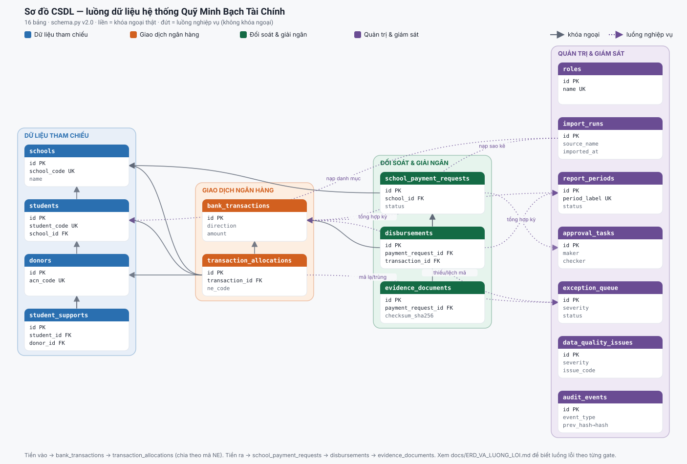

Tổng quan
Việc đang chờ xử lý và tình trạng dữ liệu.
Luồng tiền
Mỗi dòng là % trên tổng tiền vào/ra — số suy ra, xem footer.
Ngoại lệ đang mở, theo mức độ
Từ exception_queue, xếp từ nghiêm trọng nhất.
Cần xử lý
Bấm một dòng để mở danh sách.
Tiền vào chưa gán mã, theo năm
Di chuột hoặc focus vào một cột để xem số chính xác.
Giao dịch gần đây
8 dòng mới nhất. Nội dung chuyển khoản thô không hiển thị.
| Ngày | Mã giao dịch | Số tiền | Mã tách được | Trạng thái |
|---|---|---|---|---|
| Đang tải… | ||||
Tình trạng hệ thống
Dữ liệu có đang được nạp và ghi đúng không.
Nhập mã NE (có hoặc không có hậu tố S/T), mã ACN, hoặc số tham chiếu.
16 bảng, nhóm theo luồng tiền
Liền = khóa ngoại thật trong schema.py. Đứt = luồng nghiệp vụ
(nạp dữ liệu, phát sinh ngoại lệ, chờ duyệt, tổng hợp kỳ) — không có khóa ngoại.

Sinh ra từ schema.py (phiên bản 2.0). Xem
docs/ERD_VA_LUONG_LOI.md để biết luồng lỗi theo từng gate đối soát.